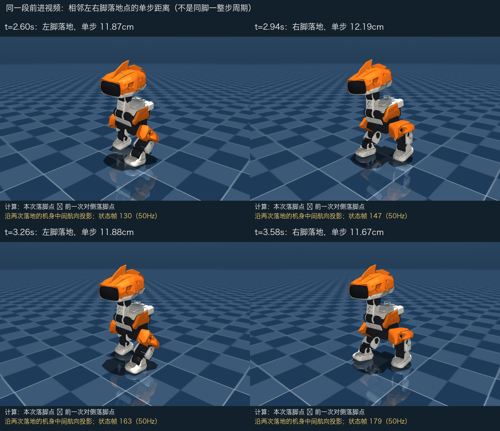

整理日期：2026年11月16日。对象以桌面v3中的实际文件为准。“v1柔性行走”是用户的版本称呼，文件本身不编码该版本名。
/Users/xiaoyaozi/Desktop/v3/P12_flexDR100.onnx40c392fa41a30c657ca21528151120fa877983ad906181ef98c29985a17c2d20所选血缘累计3142次PPO更新：刚性主线至P12共3042次，最后柔性续训100次。P04、P08移除；P13虽在其他历史分支训练过，但没有进入此最终模型。800步bootstrap和1800步BC是监督优化步，不计入PPO轮数，也不表示另加1800轮PPO。
早期P00～P07来自xduck_2_0_2_v201route_step13_20261108这条2.0.2从零训练血缘；10cm分支原样继承它的P07，再重训P09～P12。最后独立分支为/home/xingchen/Xduck_branches/xduck_2_0_2_P12_flexDR100_20261114。沿用2.0.1路线是沿用课程组织与算法实现，实际所选祖先检查点使用2.0.2物理模型，并非把2.0.1走路权重直接命名成2.0.2。
下表取实际COMPLETE记录和对应TRAINING_CONFIG，不按目录名或旧路线模板推测。每阶段均24步rollout；P05为256环境，P06/P07为128环境，不能把整个训练过程都写成4096环境。最后续训确为4096×24。
| 阶段 | 本阶段PPO | 累计PPO | 环境×步数 | 配置LR | 训练内容 |
|---|---|---|---|---|---|
| P00 | 200 | 200 | 4096×24 | 0.001 | 随机初始化，基础站走、刚性物理和100ms抬脚阈值。 |
| P01 | 701 | 901 | 4096×24 | 0.001 | 继承P00；按累计300/600/900更新推进DR、参考与节律课程。选择累计901更新的状态。 |
| P02 | 299 | 1200 | 4096×24 | 0.001 | 继承P01，延续后期DR与220ms抬脚阈值，累计到1200更新。 |
| P03 | 30 | 1230 | 4096×24 | 0.001 | 0.5秒平均速度修正，继续30次；随后不经过P04。 |
| P05 | 81 | 1311 | 256×24 | 5e-05 | 从本次P03构造clean seed并训练clean R3，清理腿部/髋侧摆输出；不串入历史R1/R2模型。 |
| P06 | 151 | 1462 | 128×24 | 5e-05 | 方向与速度任务第一轮，采集本次新模型行为，作为后退bootstrap的父模型。 |
| P07 | 180 | 1642 | 128×24 | 5e-05 | 先做800步后退/方向监督bootstrap，再PPO 180次；随后不经过P08。 |
| P09 | 400 | 2042 | 4096×24 | 3e-05 | 从P07分支，固定10cm目标重新训练400次；替代另一条13cm目标分支的后期。 |
| P10 | 200 | 2242 | 4096×24 | 3e-05 | 10cm步长、左右镜像、起步脚/相位随机化，保留行走与转向。 |
| P11 | 400 | 2642 | 4096×24 | 3e-05 | 混合本次P10前进与P07方向数据；先1800步行为克隆，再400次多任务PPO。 |
| P12 | 400 | 3042 | 4096×24 | 3e-05 | 加入起步阶段/航向误差编码和网络内航向修正，PPO 400次；这是柔性续训父模型。 |
| P12柔性续训 | 100 | 3142 | 4096×24 | 3e-5 | 从P12最终checkpoint恢复actor、critic和Adam；加入48个被动柔性轴与刚度/阻尼±10%DR。P13排除。 |
早期LR=0.001是自适应调度的配置起始值，不代表每一步实际优化器LR。后期P09～P12和柔性续训为固定3×10⁻⁵。按各阶段实际环境数计算，所选血缘PPO转移样本合计约269.88百万条；不包含评估、采集、bootstrap/BC样本，也不是唯一状态数。
| 项目 | 核对结果 |
|---|---|
| 整机名义质量 | 10.29314kg；左右脚各0.189kg |
| 质量、局部质心、惯量、关节轴和限位 | 刚性主线冻结模型与提供的2.0.2源模型逐项核对；未使用旧机体质量替代 |
| HOME根部高度 | 约0.323327m（源HOME约0.323227m＋0.1mm间隙）；是base_link高度，不是整机头顶高度 |
| 刚性主线物理SHA | be1642544ab7a8190262cb3877f99d7cef1758eb26371959b45a42c4d8434d60 |
| 柔性版本物理SHA | 82a74a5eb50786bd7c219b29bb0ee27b47724533856dc33766dc20daf6b27ab9 |
| 初始姿态 | HOME用于站立/初始化；MJCF关节零点与HOME不混用。实机编码器零位与模型角的等价关系仍需实体核实 |
runs/P12/ppo_run/model_399.pt，SHA为90dff450c863c0a8ee5c58237b9c1be857d37413853c47f33d55ec3fb91242f6。恢复actor、critic和Adam；初始网络与父模型逐张量一致。flex_update_100.pt。每1ms电机周期分16次物理积分，每物理步62.5μs，策略周期20ms。这里的柔性参数来自已有柔性模型配方，尚未通过真机辨识确定。此次训练“开启柔性”不等于已经解释或消除了真机后仰的根因。
| 项 | 实际值 |
|---|---|
| 算法 | DirectionAnchoredPPO；actor/critic基础MLP为512→256→128，ELU；actor保留P12镜像/航向模块 |
| 观测/动作 | actor 61维，critic 76维，动作14维；柔性状态未作为新增actor输入 |
| PPO更新 | 5 epochs、32 minibatches、clip 0.2、γ=0.995、GAE λ=0.97、熵系数0.0001、最大梯度范数1 |
| 优化器与归一化 | 恢复父模型Adam，固定LR=3e-5；actor归一化保持冻结；YAML中的resume=false不能当作未恢复，恢复由续训脚本显式完成 |
| 方向锚点 | 继承P12 anchor数据；权重0.002，anchor batch384 |
| 部署 | 50Hz，API-v2；obs float32[batch,61] → actions[batch,14]；归一化内嵌ONNX，不额外重复归一化 |
| 电机增益 | 膝100/3、踝90/3，其余逐轴值见配套xc_walk_stand.py和配置；实机23.5N·m估算保护可能缩放实发增益 |
| 柔性续训配置 | 完整生效YAML；最终I/O合同；柔性模型合同 |
新增的是柔性轴刚度/阻尼±10%DR；其余沿用P12机制。后期重量扰动只缩放base_link的质量/惯量，局部幅度±12.5%，并非全机质量±12.5%。原刚性P12站立库实际总质量约10.1665～10.4200kg，两脚质量仍固定189g。
base_link及4个头颈部件的局部质心每轴基础±6.27mm，后期2.5倍为±15.675mm；这是部件局部COM范围，不能当成整机重心直接平移±15.675mm。后期还含足底倾角±3°、足底摩擦扩展、主动轴armature扩展、编码器偏差与IMU安装扰动等。柔性库重新沉降采集；原刚性库的精确极值不能直接冒充新库逐项实测极值。
未新增主动电机Kp/Kd域随机化、关节摩擦域随机化或逐脚重量域随机化；原电机模型的摩擦仍存在。有限站立库有96套独立物理世界，288条状态不等于288套独立质量/COM参数。
最后一轮日志中的motion/speed2s_mean_m_s≈0.1356是混合任务统计，不能当纯前进速度；left/right_cached_step≈4.44/4.43cm是全部环境缓存的无条件均值，混入转向及切换后清零、尚未更新的缓存，不能当作前进单步长度。
同一最终模型、同一视频轨迹的步长复核：前进2～8秒，17个有效交替步，中位数11.52cm，左/右中位11.53/11.51cm，10%～90%分位11.35～11.88cm；后退14个有效步，中位11.06cm。定义是相邻对侧脚实际落地参考点沿两次落地中间机身航向的投影，后退符号校正，不是同脚完整stride或同时刻双脚间距。使用训练同一检测器和独立相邻事件位置差交叉核对，长度差为0。
轨迹保存频率50Hz，视频30fps；从同一组状态重建脚底几何和落脚点，没有另跑一次仿真替代视频。接触高度使用1mm/2mm滞回、连续两个离地帧解锁落地，不用8mm抬脚阈值删掉浅步。视频中的10cm是训练目标，当前前进实测仍超目标约1.5cm。

每段2秒现有Stand→6秒最终Walk→2秒停站；前后命令±0.3m/s，原地左右转±0.4rad/s，命令每20ms按0.2比例渐变。使用训练对应的48轴名义柔性模型，此次播放不抽样DR；现有电机模型、当前限位及逐新命令23.5估算保护。相机跟随保持正面斜45°，轨迹图显示真实世界XY/航向。
| 场景 | Walk段平均前向速度m/s | 全段航向变化 | 最大倾角 | 严重倾倒/低高度事件 |
|---|---|---|---|---|
| 前进 | +0.350 | +37.8° | 16.77° | 无 |
| 后退 | -0.273 | -25.6° | 16.16° | 无 |
| 原地左转 | -0.012 | +157.8° | 10.36° | 无 |
| 原地右转 | -0.012 | -137.9° | 9.48° | 无 |
四段均未出现所记录的严重倾倒事件，但前进全段偏航+37.8°、后退−25.6°，原地转弯也伴随平移。单次名义播放不等于多随机种子DR验收；不能据此宣称真机后仰或全部转弯稳定性问题已修复。
此次只训练Walk。桌面v1的xc_standing.onnx仍是2.0.1训练的站立/恢复权重，加2.0.2 HOME观测参考差适配，没有在本次100轮中更新；它与v11原始Stand也不是同一个模型。部署消费者支持这套站走组合，但消费者本身不包含站立网络。v3当前只有Walk ONNX，不是完整双槽部署包。
当前P12训练终止使用倾角超过70°，评估工具常用20°和根高度阈值；这类口径差异在旧1.1.4路线也存在，不应写成2.0.2新引入的唯一原因。此续训按授权保留课程，没有悄悄修改该判据。实机零位、实际生效增益、反馈时间戳/延迟、足底接触、柔性参数等仍需实体核实，当前资料不证明真机迁移验收通过。
训练操作顺序：从已核对的2.0.2 P12父检查点准备独立目录 → 建48轴柔性MJB → 按同一P12配置生成柔性沉降站立库 → 校验reset保留被动轴挠曲且DR在恢复库后生效 → 64环境流程检查 → 重新加载原P12做4096×24正式100轮 → 导出ONNX并做数值一致性检查。关键脚本位于本包source/，完整配置位于configs/。
最终检查点：/home/xingchen/Xduck_branches/xduck_2_0_2_P12_flexDR100_20261114/runs/P12/ppo_run/flex_update_100.pt
检查点SHA：7dff7f556f2ab25934b544c19ff543cbcfcf8d5d03fa42feae93b4194c3f863e
最终ONNX：P12_flexDR100.onnx；配套消费者：xc_walk_stand.py。
本资料包包含报告、最终ONNX、配套消费者、各阶段配置记录、选定审计证据、续训脚本与视频；不包含大体积.pt检查点、完整训练owner源码树、站立库数组和物理网格资产，不能把它当作脱离原工作区即可直接运行的完整复现环境。父模型、数据和完整环境仍保存在上述5090分支；本次整理没有修改模型、部署或开启新训练。
身份与计数清单 · 训练机配置和完成记录 · P07正式800步记录 · 最终导出元数据 · 物理参数审计
| 轴名 | 部件 | 刚度N·m/rad | 阻尼N·m·s/rad |
|---|---|---|---|
| left_hip_mount_flex_0 | left_hip | 800 | 3 |
| left_hip_mount_flex_1 | left_hip | 800 | 3 |
| left_hip_mount_flex_2 | left_hip | 800 | 3 |
| left_hip_yaw_joint_bend_x | left_hip_yaw | 500 | 3 |
| left_hip_yaw_joint_bend_y | left_hip_yaw | 500 | 3 |
| left_hip_yaw_joint_structure_flex | left_hip_yaw | 500 | 3 |
| left_hip_roll_joint_bend_x | left_hip_roll | 500 | 3 |
| left_hip_roll_joint_bend_y | left_hip_roll | 500 | 3 |
| left_hip_roll_joint_structure_flex | left_hip_roll | 500 | 3 |
| left_hip_pitch_joint_bend_x | left_hip_pitch | 500 | 3 |
| left_hip_pitch_joint_bend_y | left_hip_pitch | 500 | 3 |
| left_hip_pitch_joint_structure_flex | left_hip_pitch | 500 | 3 |
| left_knee_pitch_joint_bend_x | left_knee_pitch | 100 | 3 |
| left_knee_pitch_joint_bend_y | left_knee_pitch | 500 | 3 |
| left_knee_pitch_joint_structure_flex | left_knee_pitch | 500 | 3 |
| left_ankle_pitch_joint_bend_x | left_ankle_pitch_joint | 500 | 3 |
| left_ankle_pitch_joint_bend_y | left_ankle_pitch_joint | 1500 | 3 |
| left_ankle_pitch_joint_structure_flex | left_ankle_pitch_joint | 500 | 3 |
| neck_pitch_joint_bend_x | neck_pitch | 100 | 3 |
| neck_pitch_joint_bend_y | neck_pitch | 500 | 3 |
| neck_pitch_joint_structure_flex | neck_pitch | 500 | 3 |
| head_pitch_joint_bend_x | head_pitch | 100 | 3 |
| head_pitch_joint_bend_y | head_pitch | 500 | 3 |
| head_pitch_joint_structure_flex | head_pitch | 500 | 3 |
| head_yaw_joint_bend_x | head_yaw | 100 | 3 |
| head_yaw_joint_bend_y | head_yaw | 500 | 3 |
| head_yaw_joint_structure_flex | head_yaw | 500 | 3 |
| head_roll_joint_bend_x | head_roll | 100 | 3 |
| head_roll_joint_bend_y | head_roll | 500 | 3 |
| head_roll_joint_structure_flex | head_roll | 500 | 3 |
| right_hip_mount_flex_0 | right_hip | 800 | 3 |
| right_hip_mount_flex_1 | right_hip | 800 | 3 |
| right_hip_mount_flex_2 | right_hip | 800 | 3 |
| right_hip_yaw_joint_bend_x | right_hip_yaw | 500 | 3 |
| right_hip_yaw_joint_bend_y | right_hip_yaw | 500 | 3 |
| right_hip_yaw_joint_structure_flex | right_hip_yaw | 500 | 3 |
| right_hip_roll_joint_bend_x | right_hip_roll | 500 | 3 |
| right_hip_roll_joint_bend_y | right_hip_roll | 500 | 3 |
| right_hip_roll_joint_structure_flex | right_hip_roll | 500 | 3 |
| right_hip_pitch_joint_bend_x | right_hip_pitch | 500 | 3 |
| right_hip_pitch_joint_bend_y | right_hip_pitch | 500 | 3 |
| right_hip_pitch_joint_structure_flex | right_hip_pitch | 500 | 3 |
| right_knee_pitch_joint_bend_x | right_knee_pitch | 100 | 3 |
| right_knee_pitch_joint_bend_y | right_knee_pitch | 500 | 3 |
| right_knee_pitch_joint_structure_flex | right_knee_pitch | 500 | 3 |
| right_ankle_pitch_joint_bend_x | right_ankle_pitch | 500 | 3 |
| right_ankle_pitch_joint_bend_y | right_ankle_pitch | 1500 | 3 |
| right_ankle_pitch_joint_structure_flex | right_ankle_pitch | 500 | 3 |